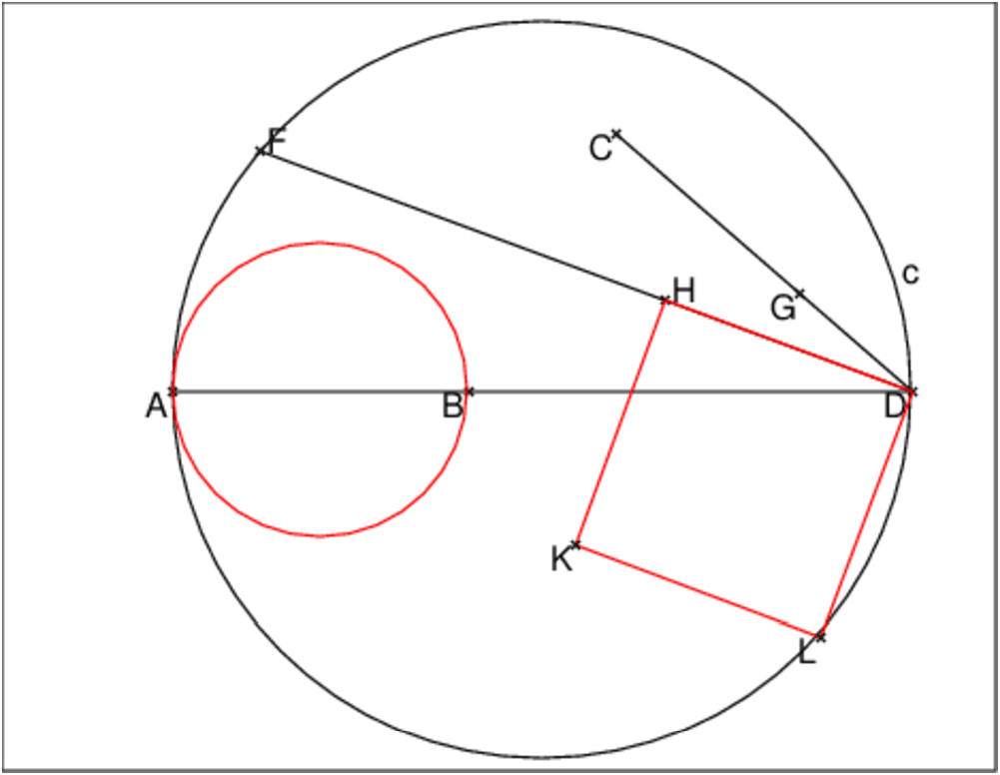
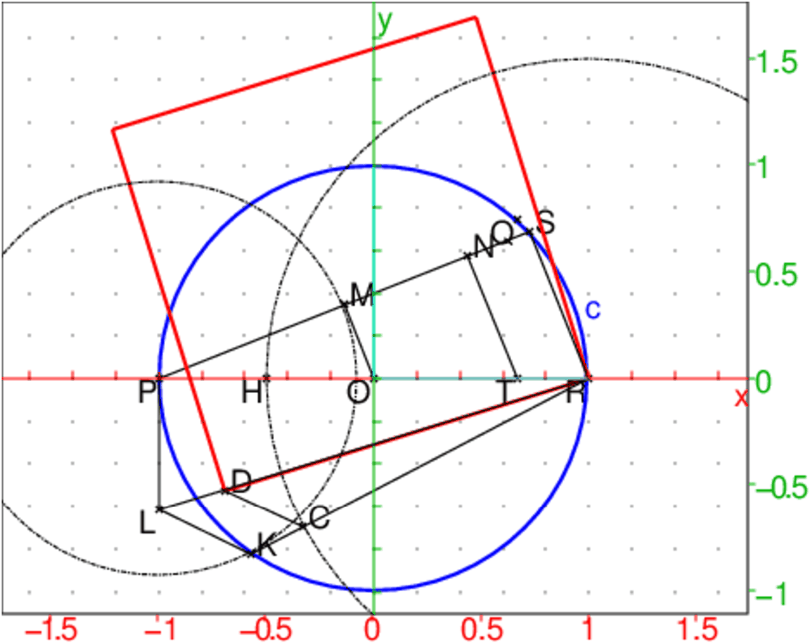

Avec Xcas si on tape :
evalf(pi,21)
On obtient :
3.141592653589793238462
Une valeur approchée par excès de π par un rationnel est :
|
On a 22/7≃ 3.14285714286 ce qui fait 2 décimales exactes et
evalf(22/7-pi) renvoie 0.00126448926721
Donc 0<22/7−0.0013<π<22/7 et 0<22/7−π<1.310−3
Une autre valeur approchée par excès de π par un rationnel est :
|
On a 355/113≃ 3.14159292035 ce qui fait 6 décimales exactes et
evalf(355/113-pi) renvoie 2.66764118351e-07
Donc 0<355/113−2.67e−07<π<355/113
Une valeur approchée par défaut de π par un rationnel est :
|
On a 333/106≃ 3.14150943396 ce qui fait 4 décimales exactes
et
evalf(pi-333/106) renvoie 8.32196276406e-05
Donc
| <π< |
| +8.33e−05 |
Ces approximations proviennent du développement en fractions continues de
π.
On tape :
dfc(pi)
On obtient :
[3,7,15,1,292,1,1]
On tape :
dfc2f([3,7])
On obtient 3+1/7 :
22/7
On tape :
dfc2f([3,7,15])
On obtient 3+1/(7+1/15):
333/106
On tape :
dfc2f([3,7,15,1])
On obtient 3+1/(7+1/(15+1)) :
355/113
Ce carré a pour coté : √22/√7.
On a :
22=52−3 et 7=22+3
Donc :
√22 est le 2ième côté de l’angle droit d’un triangle
rectangle dont l’hypoténuse a pour longueur 5 et un côté de l’angle droit
a pour longueur √3.
√7 est la longueur de l’hypoténuse d’un triangle rectangle dont les
côtés de l’angle droit ont pour longueur 2 et √3.
On tape :
triangle_equilateral(1,3,C):; C:=C; A:=point(-1);B:=point(1); l:=normal(longueur(A,C)); D:=point(4); segment(A,D); c:=cercle(A,D); F:=inter(c,cercle(A,l/2),C); normal(longueur2(F,D)); normal(longueur2(D,C)); G:=D+(C-D)/longueur(C,D); normal(longueur2(D,G)); H:=normal(inter_unique(segment(D,F),parallele(G,droite(F,C)))); normal(longueur(H,D)); segment(F,D),segment(D,C); carre(D,H,K,L,affichage=1);
On obtient l’aire du carré rouge approche par excèsà 1.310−3
l’aire du cercle rouge de diamètre AB:

On a :
normal(longueur(A,C)); renvoie 2*sqrt(3)
normal(longueur2(F,D) renvoie 22
normal(longueur2(D,C)); renvoie 7
normal(longueur2(D,G)) renvoie 1
normal(longueur(H,D)); renvoie (sqrt(154))/7
normal(longueur2(H,D)); renvoie 22/7
aire(carre(D,H)) renvoie 22/7
En 1913 Ramanujan proposa la construction d’un carré ayant pour aire celle
d’un cercle de rayon 1 avec une erreur de 1.47*10−5.
Ce carré a pour coté : √355/√113.
On a :
355=182+31 et 113=122−31
355/92=4+31/92 et 113/62=4−31/62
Il reste a construire √31.
On a :
31=62−5
Voici la construction de ce carré faite par Ramanujan.
Soit le cercle c de centre O et de diamètre PR=2.
Avec Xcas, on prend :
O:=point(0);P:=point(-1);R:=point(1);
H:=point(-1/2);T:=point(2/3);
Le cercle c passe par le point Q:=point(2/3+i*sqrt(5)/3);
On a RS=QT=sqrt(5)/3
On définit les projections M et N respectives M et N de O et T
sur PS.
On définit :
L:=point(-1-i*longueur(M,N));
K sur le cercle c tel que PK=PM
C sur le segment RK tel que RC=RH=3/2
D sur le segment RL tel que CD//KL
Le carré de côté RD a alors pour côté :
|
|
Avec Xcas, ontape :
O:=point(0); P:=point(-1); R:=point(1); H:=point(-1/2); T:=point(2/3); c:=cercle(O,1,affichage=4+epaisseur_ligne_2); Q:=point(2/3+i*sqrt(5)/3); S:=inter_unique(c,cercle(R,sqrt(5)/3),Q); s:=segment(P,S); M:=projection(s,O); N:=projection(s,T); L:=point(-1-i*longueur(M,N)); K:=inter_unique(c,cercle(P,longueur(P,M)),L); C:=inter_unique(droite(R,K),cercle(R,3/2),K); D:=inter_unique(droite(L,R),parallele(C,droite(L,K))); carre(D,R,affichage=1+epaisseur_ligne_2); segment(P,L); segment(R,S); segment(R,L); segment(R,K); segment(L,K); segment(D,C); segment(O,M); segment(T,N); cercle(P,longueur(M,P),affichage=ligne_tiret_point); cercle(R,3/2,affichage=ligne_tiret_point);
On tape :
evalf(aire(carre(D,R)))
On obtient :
3.14157798199
On tape :
evalf(pi-aire(carre(D,R)))
On obtient :
1.46716034237e-05
On obtient la figure :

Calcul de RD2
On a :
RS2=5/9
PS2=4−5/9=31/9
PK2=PM2=PS2/4=31/36
PL2=MN2=PS2/9=31/81
RK2=4−PK2=113/36
RL2=4+PL2=355/81
RC2=RH2=9/4
RD2/RL2=R2C/RK2=81/113
Donc RD2=355/113
On tape :
A:=(9^2+19^2/22)^(1/4)
evalf(A)
On obtient :
3.14159265258
On tape :
evalf(pi)
On obtient :
3.14159265359
On tape :
evalf(pi-A)
On obtient :
1.00715169538e-09
Avec Xcas, on tape :
A:=ln(5280^3*((236674+30303*sqrt(61))^(3))+744)
evalf((A/pi)^2)
On obtient :
427.0
On tape :
evalf((A/pi)^2,52)
On obtient :
0.4270000000000000000000000000000000000000000000000000e3
On tape :
evalf((A/pi)^2,55)
On obtient :
0.4270000000000000000000000000000000000000000000000000106e3